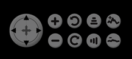
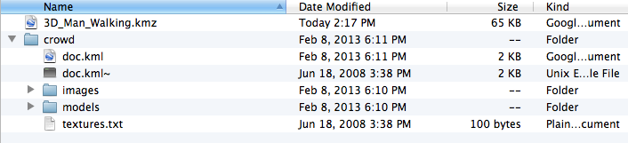
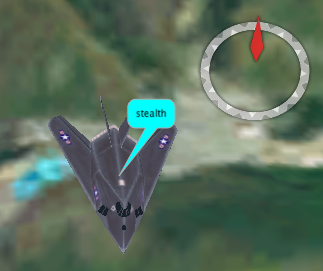
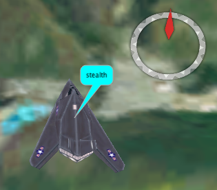
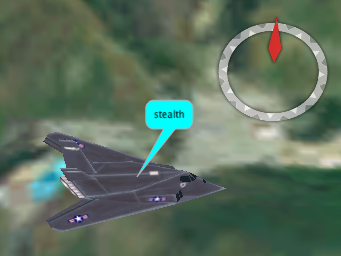

Abstract
The Scripted Display Tools are open source software developed by the Naval Research Laboratory (NRL) PROTocol Engineering Advanced Networking (PROTEAN) group. "sdt" provides a simple 2D visualization capability using standard image files for a background and set of overlaid nodes. "sdt3d" provides a 3D visualization capability using NASA's World Wind 3D interactive world viewer and set of overlaid nodes. Nodes are assigned iconic images for the display sourced from standard format image files (e.g. JPEG, PNG, GIF, etc) or from 3D Model files (3ds). In "sdt" a custom coordinate system can be defined for the background and node positions can be dynamically updated to "move" their associated icons about the background. In "sdt3d" nodes are placed at geographic coordinates that can be dynamically updated to "move" their associated icons about the globe.
Displayed nodes can also be dynamically "linked" and "unlinked" with lines of user-specified color and thickness. This makes the sdt tools well-suited for one of its intended purposes which is to provide a real-time visualization of dynamic, possibly mobile data communication networks. While the sdt feature set will be centered around supporting this function, sdt capabilities will be left open to other creative uses. Here are screenshots of "sdt" and "sdt3d" (1) (2) in action.
"sdt" is written in C++ using the freely-available, cross-platform wxWidgets library for graphical user interface applications. "sdt3d" is written in Java using WorldWinds opensource JDK. Versions of the libraries are available for most Unix, MacOS, and Win32 platforms in a number of different forms.
Table of Contents
Source code and binary distributions (Linux, Mac OS, and Windows) are available at:
http://downloads.pf.itd.nrl.navy.mil/sdt/
The "sdt3d" source has dependencies on NASA's Worldwind JDK, joglutils (a library that provides Java bindings for OpenGL and 3d Model support), and protolib-jni (a library that provides Java native interface to NRL's protolib protoPipe implementation). "sdt" is dependent on NRL's protolib library and wxWidgets.
The "sdt3d" program may be launched from a command-line, the sdt3d.bat windows batch file, a mac application, or the Linux shell script sdt3d.sh. To launch "sdt3d" from the command line, use the following command-line syntax:
java -Xmx512m -Dsun.java2d.noddraw=true -jar sdt3d.jar
The sdt3d.jar file used is available in the sdt3d binary distribution or may be built as described in the source code download.
The "sdt3d" application can either accept real-time commands over a command pipe, over a UDP socket, or you may use the "Open File" menu option to load an input file containing sdt commands.
Open File... | Causes the "sdt3d" application to to parse the selected <scriptFile> containing sdt commands. This command will reset application state with the exception of any loaded sprites. Note that any user preference or configuration files will be reloaded. To clear the configuration file association use the "clear configuration menu item". See the input file section for more details. |
Append file... | Cause the "sdt3d" application to either append the selected file to the input file list to be processed sequentially, or, if no input file is currently being processed, to begin processing the file immediately. Neither the user preferences file or the user configuration file is reloaded in either case. |
Reset | Cause the "sdt3d" application to perform a "soft" reset. As this option does not close sockets it is useful for clearing sdt state when a scenario has been halted and will be restarted. A soft reset disables any debug logging, removes any user defined layers and and all system renderables (e.g. nodes, links, regions, etc.), and reloads any user configuration file. sdt commands that should be reloaded during a soft reset (like sprite assignments, view position) should be added to the user configuration file. Any sprite definitions will be retained. Note that any input file processing will continue. |
Hard Reset | A "hard" reset will perform a "soft" reset but also close any open sockets, stop reading any input file, reset system state (e.g. offlineMode, elevationData, stereoMode, background color, uncollapse links, unfollow any nodes, disable node focust, restart the view controller, and reset to basic orbit view). Any sprites definitions will be retained. Any sdt setting and configuration files will be reloaded. |
Reset perspective | Cause the "sdt3d" application to reset the system perspective to the default startup perspective, e.g. view centered on the blue marble, offline mode on, elevation data on, stereo mode off, background color black, collapse links off, layers set to default selections. Sdt objects will NOT be deleted when the perspective is reset. |
Delete sprite table | Will delete the sprite table. Note that the "default" transparant sprite will not be deleted when the sprite table is emptied. Should it be necessary to remove the default sprite the "delete sprite,default" command should be used. |
Configuration file options> Load configuration file... Clear configuration | Loading a configuration file will reset all system state (with the exception of deleting the sprite table) and load any userPreferenceFile before processing the selected file. A configuration file can contain any of the sdt commands and will be reloaded every time sdt3d state is reset, e.g. after a "reset" command, when an input file is loaded via the command menu or a pipe, or when the userConfigFile sdt command is encountered. Only one configuration file can be defined at a time. The clear configuration menu option will reset system state and load any user preferences file, disabling a configuration file association. NOTE: Loading and clearing a configuration file will not clear the sprite table. Use the delete sprite table menu option or use the "clear sprite,all" or the "delete sprite,all". Note that the "clear all" command will NOT clear the sprite table while "delete all" will. |
KML> Load KML file... Load KML URL... _________________________________________________ <kml list> | Load KML files from a local file or URL respectively. Loaded KML files will be added to the kml list and to a KML panel that is displayed when the KML Panel checkbox is selected. Clicking on the KML entry in the KML panel will "fly to" the selected KML reference location. KML elements are added to the sdt3d KML layer. NOTE: The KML standard is not fully supported at this point. Discovering what models fail to load successfully is an exercise for the reader. KML files that cannot be loaded via URL may load successfully when referenced locally. |
Save a screenshot | Cause the "sdt3d" application to save a screenshot of the current display to <fileName> |
Listen to UDP port.../UDP Off <port> Listen to TCP port.../TCP Off <port> | Selecting the "Listen to <protocol> port..." menu items will cause the "sdt3d" application to listen to the requested socket type. A popup window will prompt for the port to listen to and an optional (UDP only) multicast address. [<addr>/]<port> Once a socket has been successfully created the menu item will toggle to "<protocol> Off <port>". If the application is currently listening on a socket, the menu item will toggle to "Off <port>". Selecting this menu item will close the socket. sdt3d sockets will interleave commands, as received, from multiple clients. It is recommended that a gentlemans agreement not to manage links with the same link Id exist amongst clients. |
WWJ offline mode | Turns off worldwind's network tile retrieval process. sdt3d will still be able to display any tiles presently existing in the cache. |
Set WWJ cache ... | Sets a non-default cache location for WWJ tiles. This location will be checked for tiles in addition to any located in the default cache. Multiple cache locations may be established. Note that when not in "offline mode", worldWind will continue to update the default cache. A bulkDownload utility is available that can be used to download worldWind tiles into a local cache. |
Exit | Exits the "sdt3d" application |
Layer Controls> Reset Worldwind layers Remove user defined layers | Reset Worldwind Layers will return the Worldwind specific layers to the default configuration. Remove User Defined Layers will remove all user defined object layer associations and layers. |
Bookmarks Bookmark this view Load bookmark Load deafult bookmarks _________________________________________________ <bookmark list> | "Bookmark this view" creates a bookmark of the current view. Bookmarked views will be added to the bookmark list and can be subsequently reloaded to return to the saved viewpoint while the application runs. Saving the view to disk will prompt the user for a view name and disk location. The saved file will be named <viewName>.xml and can then be subsequently reloaded via the "Load Bookmarks" menu item. If the view is saved to the sdt3d configuration directory (the default location) the view will be loaded when "Load default bookmarks" is invoked. Saved views are available until subsequently deleted. Views saved for the current session will only be available until the sdt3d application exits. The "Load Default Bookmarks" menu item will load all valid <viewName>.xml files available in the sdt3d configuration directory. The "Load Bookmark" menu option will allow a user to load an individual <viewName>.xml file from the file system. To load a previously saved or loaded view xml file, select the view from the list of bookmarks. |
Globe>
✓ Round
Flat Earth>
Lat/Lon
Mercator
Sinusoidal
ModSinusoidal | Toggles the globe projection between the various options. This is useful when visualizing non geocentric data. |
Elevation model | Toggles the elevation model on and off. |
Stereo mode | Toggles analglpyh stero mode on and off. (Creates a stereoscopic 3D visualization effect). |
Background color | Changes the background color of the WWJ display. A popup window will prompt for the color. This is useful for non geocentric data visualizations particularly when the Worldwind layers are turned off. Color can be specified by name, rgb, or hex. |
Collapse multiple links | Toggles the display of multiple links between two nodes on or off. Multiple links will be collapsed into a single link. |
Apply symbol offset | Enabling symbol offset will center the symbol around the node's sprite center rather than around the actual node position point. (Icon images are positioned at node position at image center bottom and so the symbol may not fully "hug" the icon when symbol offset is not enabled.) |
Show 2nd globe | Will popup a window that displays a second globe shared with the main display. This globe can be controlled by an independent view control panel for multiple views of the same globe and its contents. The multiFrame command will also toggle this window. |
Log debug output | Toggles whether sdt commands are logged to stdout. If output is currently being logged to an output file it will be stopped. Toggling debugging on via the menu item will direct logging to sdtout. Use the logDebugOutput command to set a debug file name. |
Show layer panel | Toggles the layer panel display. |
Show sdt panel | Toggles the sdt panel display. |
Show status panel | Toggles the status panel display. |
Show sdt view controls | Toggles the sdt view controls status. |
Toggles whether automated sdt view controls are disabled. When disabled, sdt view control commands like flyTo and lookAt will be silently ignored. This is useful for when the user wishes to regain control of the view when sdt view commands are being sent via an external mechanism.
View Control buttons are available on the bottom left corner of the sdt3d display:

Default control keys are also available.
Mouse with scroll wheel:
| Pan | Left mouse button click & drag - all directions. |
| Zoom | Use the scroll wheel on the mouse or Left & Right mouse (both buttons) click & drag - up and down. |
| Tilt | Right mouse button click & drag - up and down or use "Page Up" and "Page Down" on the keyboard. |
| Rotate | Right mouse button click & drag - left and right. Note: Crossing the top and bottom half of the screen while rotating will change direction. |
| Stop | Spacebar |
| Reset Heading | Shift-N |
| Reset All | Shift-R |
Single button mouse:
| Pan | Left mouse button click & drag - all directions. L left mouse button click once to center view. |
| Zoom | Hold "Ctrl" on the keyboard and Left mouse button click & drag - up and down |
| Tilt | Hold "Shift" on the keyboard and Left mouse button click & drag - up and down or use "Page Up" and "Page Down" on the keyboard |
| Rotate | Hole "Shift" on the keyboard and Left mouse button click & drag - left and right |
| Stop | Spacebar |
| Reset Heading | Shift-N |
| Reset All | Shift-R |
To run "sdt" with script file "script.sdt":
sdt input script.sdt
Alternatively the input script can be loaded from the file menu after "sdt" is invoked.
By default, "sdt" monitors stdin for commands. The user may even type commands and manipulate the "sdt" display manually via sdtin, but it is generally expected that another process will control the "sdt" display, even to the point of providing very dynamic updates to produce animations. "sdt" will also accept commands sent over a protopipe named sdt by default.
To send real time commands to a sdt application use the "sdtcmd" utility:
sdtcmd <sdt commands>
The "sdtcmd" utility is available in the binary distributions or can be built from within the sdt source distribution.
By default, sdt creates an input pipe that it monitors for sdt commands. The pipe is named sdt by default. It is generally expected that another process will control the sdt display, even to the point of providing very dynamic updates to produce animations.
To send any quoted value to an sdt application via "sdtcmd", the string to be quoted must be enclosed in single quotes. Note that nested quotes are not allowed.
For example:
# Update the status of an sdt display sdtcmd status "New Status Text" # Draw a sphere around node m1-node08 sdtcmd node m1-node08 symbol sphere
To send sdt commands to an sdt instance named other than the default, use the instance command:
# Send sdt commands to an sdt instance named sdt2 # and move m1-node03 to position X,Y and set the label color to cyan sdtcmd instance sdt2 node m1-node03 position -77.005610,38.824472,0.000000 label cyan
Sdt commands may be passed to sdt3d application via command line arguments. Multiple commands can be sent. From the command line:
OSX
# Option 1: invoke the sdt3d script file in the sdt3d.app bundle, e.g. # Set and load a user configuration file ./std3d.app/Contents/Resources/script userConfigFile <fileName> # Load an input script upon startup ./sdt3d.app/Contents/Resources/script input <fileName> # Send a series of sdt commands ./sdt3d.app/Contents/Resources/script status "some status" node ljt pos -120.8025,35.7528,2.0 symbol sphere # Option 2: invoke the script via the example startup script in examples/startup-scripts/macosx # Listen to TCP port 50000 on startup # You must change the path in the startup script if you are not in the examples/startup-scripts/macosx directory ./start-sdt3d.sh LISTEN TCP,50000
sdt scripts are text files containing a sequence of commands. Comments may be embedded within sdt scripts by preceding them with a '#'. Script files can include other scripts with the INPUT command. Script files included this way will be processed "in line", meaning that when the INPUT command is encountered within a script, all commands in the included script will be processed before any subsequent commands in the original script. Note that this is in contrast with input commands received over the command pipe. In this case the files will be processed serially.
sdt3d configuration files are stored in the <userHomeDir>/.config/sdt3d directory. This directory will be created automatically upon application startup if it does not already exist. The application will also look for the sdt.properties file in this directory and create the file if it does not exist.
The "sdt.properties" contains a set of key-value pairs that define system-wide sdt properties. Currently only the userPreferencesFile property is supported. This key-value pair should be used to point to a user defined preferences file. By default this file name is set to sdt.settings and should be a regular text file. sdt3d will look for this file in the configuration file directory, as fully qualified, or as defined by the sdt3d file lookup rules. It is not required that the sdt.settings file exists.
# Default sdt.properties setting userPreferencesFile sdt.settings
The user may override the sdt.settings filename and/or location:
# The user may override the sdt.settings file name and/or location userPreferencesFile /home/nrl/nrl-sdt.settings
The userPreferencesFile defined in the sdt.properties file can be used to set overall user preferences for the sdt3d application. It may contain any valid sdt command and should be a regular text file. This file will be loaded upon system startup, whenever an input file is loaded, or when the system is reset. In this sample file, a default search path is specified and the application is directed to start listening on tcp port 5000.
####################################################################### # # settings.sdt # # Use this file to define user preferences # ####################################################################### path "examples/;examples/sprites/;../examples/;../examples/sprites/;/Users/ljt/Projects/sdt/examples/sprites;/Users/ljt/Desktop/demo/dc-models;" listen tcp,5000 status "Listening to tcp port 5000"
A "user configuration file" can be defined that associates a sdt script file that will be loaded every time a new sdt input script is loaded via the menu option, when the system command "userConfigFile" is encountered in a sdt command sequence, or when the system is reset. This file can contain any valid sdt commands and should be a regular text file. It can be used, for example, to define sdt configurations particular to a common set of scenarios or run-time operations (e.g. sprite types, terrain overlays, elevation overlays). By default the application will look for this file in the configuration directory, as fully qualified, or as defined by the sdt3d file lookup rules.
The configuration file menu options or the userConfigFile command can be used to clear a userConfigFile association or associate a different userConfigFile. Note that loading a userConfigFile from the menu will cause the application to:
stop reading any input file
clear all system state with the exception of the sprite table
reload any userPreferencesFile
load configuration file
whereas loading a configuration file via the userConfigFile command will
associate the file to be loaded upon subsequent system reset events or when an input script is loaded via the menu command
load configuration file
NOTE: If the configuration file is being used to change sprite types, use the "delete sprite,all" command to empty the sprite table.
####################################################################### # # userConfigFile.sdt # # Use this file to define user configurations, e.g. sprites, overlays # ####################################################################### delete sprite,all sprite uav image uav.png size 72,20 sprite helo image helo.png size 105,43 sprite truck image vehicle.gif size 79,73 # Set the background boundary coordinates bgbounds -77.028633,38.828533,-77.003298,38.817720 # Load itmOverlay tile tile radarOverlay tileImage itmOverlay.png sector -77.083194,38.895139,-76.969306,38.778750
When an input file is loaded via the menu option the application will:
stop reading any input file
clear all system state with the exception of the sprite table
reload any userPreferencesFile
load configuration file
When an inputFile command is embedded within a sdt script the application will:
immediately process the input file in its entirety before the next command in the containing script or command sequence
Similarly, when an inputFile command is received over a pipe the application will:
process the file in its entirety before any other commands received over the pipe are processed
When a configuration file is loaded via the menu option the application will:
stop reading any input file
clear all system state with the exception of the sprite table
reload any userPreferencesFile
load the specified configuration file
Clearing a configuration file via menu option will:
stop reading any input file
clear all system state with the exception of the sprite table
reload any userPreferencesFile
disable any configuration file association
Clearing a configuration file via a sdt "userConfigFile none" command will:
simply disable any configuration file association
Appending a file via the "append file" menu option will process the designated file after any currently loading script is completed.
As loading sprites can be time consuming the sprite table will not be emptied upon each script load. The sprite table can be emptied as follows:
when the "Delete sprite table" menu item is invoked
via the "delete sprite,all" the "delete all", or the "clear sprite,all" commands. (Note that "clear all" does NOT delete the sprite table).
NOTE: If a given named sprite definition already exists in the application, it will not be reloaded when a duplicate sprite definition is encountered. (Assuming the image associated with the sprite type remains the same.) This will reduce system processing when configuration files are used to define sprite types. Any new or changed attributes will be applied to the sprite, but not to any nodes associated with the sprite.)
Note that the "default" sprite will not be deleted when the sprite table is deleted. The "delete sprite,default" command can be used if it is necessary to remove the default sprite.
The sdt command set is made up of key-value pairs separated by white space. Simpler commands (such as commands to control the background, or the WAIT command) are simple key-value pairs. In some cases the value of simple commands may be a comma-delimited list. More complex commands are made up of "objects" (e.g. node, link, sprite) and their "options" (e.g. position, color). "Options" may also have a comma-delimited set of attributes. Options are exclusive to an object type.
The basic grammar is as follows:
<key> [<value>]
<objectType> <objectName> [<option> <attributeList>]
An option's attribute list need not be fully qualified, but elements omitted within a list should be set to "X" to indicate "use the default value or the last attribute assigned". For example, the default attribute list for a symbol option has the following defaults:
# color = red # outline thickness = 3 # width = width of sprite # height = height of sprite # opacity = 0.15 #symbol <symbolType>[,<color>,[<thickness>[,<width>[,<height>[,opacity]]]]
To draw a blue sphere centered around node and sized to the node's sprite with a 15% opacity, the following command may be used:
node node01 symbol sphere,blue
To alter the opacity of the sphere to 95% opacity, in a subsequent command:
node node01 symbol sphere,X,X,X,X,0.95
To increase the size of the sphere to 300 meters, retaining other attributes (e.g. color blue, 95% opacity):
node node01 symbol sphere,X,X,300,X,X
To turn the symbol red, 300 meters wide, 95% opacity:
node node01 symbol sphere,red,X,X,X,X
The set of sdt "objects" includes: sprite, node, region, link, tile, kml, view, and popup. The name associated with an object can be any string, with the exception of the link command which must be made up of valid node names being "linked" e.g. "link node01:node02". (See below for more detail on the command).
Some sdt "objects" may have other "objects" as options. For example:
# Define a sprite type sprite truck image truck.png size 52,25 # Now define a node and associate it with the sprite "truck" node node-01 type truck
If an object with the associated object name already exists, the previously defined object will be used and any attribute changes will be made to the previously defined object. For example:
# Define a node node node-01 type truck label blue # Set the position of node-01, all other attributes remain the same node node-01 position -77.025146,38.822059
sdt "objects" can be deleted with the delete <objectType>,<name> command. Note that delete <objectType>,all will delete all the objects of the specified type.
# Delete node node-01 delete node,node-01 # Delete all nodes delete node,all
In addition to Worldwind and the default sdt layers that can be toggled on and off, "sdt3d" supports the creation of "User Defined" layers. A limited set of sdt "objects" and "attributes" can be associated with these layers; the set includes nodes, symbols, labels, links, regions, and tiles. "User Defined" layers are placed automatically in the layer so named.
The "layer" command will create an empty "User Defined" layer that can then be subsequently associated with objects, e.g. the command:
layer "NRL Layer"
will create a checkbox associated with a layer called "NRL Layer" under the "User Defined" section on the layer panel. Objects are assigned to user defined layers via the <objectType>Layer attribute. For example:
node node1 nodeLayer "NRL Layer"
will assign the node named "node1" to the user defined layer "NRL Layer". When "NRL Layer" is toggled on and off, the display of "node1" and all its associated attributes (label, symbol, sprite, links) will be toggled on and off. Likewise,
node node2 symbol sphere symbolLayer "NRL Layer"
will assign node2's symbol to the "NRL Layer". Toggling the "NRL Layer" then, will toggle node1 and all its attributes and the display of node2's symbol. Once an element of a node has been assigned to a user defined layer, the node itself cannot then be subsequently assigned to another layer. Likewise, once a node is assigned to a layer, none of it's elements may then be assigned to another layer.
By default the layer will be turned "on" when initially specified. Layers can be toggled on and off via the on-off attribute. The layer on-off attribute defaults to on:
layer <layerName>[,on|off]
Note: The layer command need not be used. "User Defined" layers will be created automatically when <object>Layer commands are used if they layer has not already been created.
node node2 nodeLayer "NRL Layer"
Layers can also be nested. Use double colons to indicate nested layers:
node node3 nodeLayer "NRL Layer::Links::wifi node node3 nodeLayer "NRL Layer::Links::ethernet
Note: When using "nested" layers, sdt objects may only be assigned to the tree "leafs". E.g. in the above example sdt objects may only be assigned to the "wifi" or the "ethernet" layers. Nested layers must be fully specified when assigned to sdt objects, or when the layer is toggled on or off e.g.
node node4 nodeLayer "NRL Layer::Links::wifi" layer "NRL Layer::Links::wifi,off
Layer names need not be unique when nested. NOTE: If an element has been assigned to a layer, further nested layers cannot be assigned.
At present, only user defined links are in distinct layers from the primary sdt layer assignement. User defined toggles are available to toggle "user defined" link labels, markers, and links on and off. Other sdt objects (nodes, symbols, regions) can be assigned to a user defined layers but the renderable visibility is restricted to the sdt layer toggle. For example:
node node1 symbol sphere nodeLayer test
node1 (and all its renderables) will be toggled on and off when the user defined "test" layer is toggled on and off, but the symbol, label, icon associated with node1 will be toggled off via the sdt layers toggle for each attribute. On the other hand when links are put into a link layer, the display links of ethLinks will be controlled by the user defined link layer controlls, not the sdt "network links" checkbox toggle:
link node1,node2 linkLayer ethLinks
Valid "sdt3d" named colors are black, white, yellow, green, blue, cyan, red, pink, orange, magenta, purple, and gray. Other colors can be specified by their rgb or hex values. For example:
# Set sphere color to named color "red" node node1 symbol sphere,red # Set sphere color to red rgb value node node1 symbol sphere,255:0:0 #Set sphere color to red hex value node node1 symbol sphere,0xff0000
These commands control the display of the sdt background:
bgimage <imageFile> | The indicated <imageFile> is used as the background image in the sdt display. A number of standard image formats are supported. Note the use of a background image is optional. ("sdt" only) |
bgbounds <left>,<upper>,<right>,<lower> | Sets the background boundary coordinates. In "sdt3d" the display will pan to the center of these latitude/longitude coordinates. |
bgscale <factor> | The size of the background is proportionally scaled according to the given <factor> value. Any positive floating point value may be used. ("sdt" only) |
bgsize <width>,<height> | The background image is scaled to the size specified by the <width> and <height> parameters. If one of the parameters is less than zero, the image's aspect ratio is preserved and the image is scaled to match its corresponding dimension to the non-zero parameter given. ("sdt" only) |
These commands are used to define a set of sprites (icons) and their characteristics:
sprite <spriteName> | This creates a new sprite instance of name <spriteName> or addresses a previously created sprite instance for application of other Sprite Commands (i.e. image, scale, size). The default "size" of a new sprite is 32x32 pixels. |
image <imageFile> | This assigns the <imageFile> given to be displayed for nodes of the given sprite type. (e.g. "sprite Car image car.png"). When an image for the sprite is specified, the image is scaled such that the smallest dimension (width or height) equals the minimum dimension of the sprite (32 by default). 3D Models and KML Models can also be associated with sprite images. See the Sprite KML Models section for more information specific to kml sprite types. The <imageFile> may also be an xml configuration file for a 3d model. The xml file may include the sprite attributes listed here, as well as an orientation command to override the default model positioning in the 3ds and xml files. See the 3d XML config file section for more information. sdt will first attempt to open the imageFile as specified e.g. as fully qualified, relative to the current directory, or in the current directory. If not found, it will search for the file in any path(s) previously specified with the sdt PATH command. Finally, it will look for the file in the same directory as the current input script, if any. ("sdt3d" only) Note that changing the sprite's image will not change the image of nodes already assigned the sprite, but any subsequent nodes assigned the sprite will be associated with the new image. |
scale <factor> | The size of the sprite and its associated image (if given) is proportionally scaled according to the given <factor> value. Any positive floating point value may be used. Note that changing the sprite's scale factor will only be applicable to future nodes assigned to the sprite. |
size <width>,<height> | This assigns width and height sizes to the given sprite. The dimensions are in pixels for image files and meters for 3D Models. If an image is already specified, the image is scaled to directly match the given dimensions. If one of the parameters is less than zero, the image's aspect ratio is preserved and the image is scaled to match its corresponding dimension to the non-zero parameter given. Either length or size can be set for 3D sprites but not both. The size attribute takes precedence over the length attribute if both are set and length will be set to the given width. |
light [on|off] | Controls whether "sdt3d" should apply lighting to a 3D sprite. By default, lighting is disabled. Check the 3D model's attributes to determine the correct setting. Note that the last light setting will be applied to all sprites that reference the 3ds model. |
length <lengthInMeters> | Sets a length in meters for 3D sprites. Either length or size can be specified but not both. The size attribute takes precedence over the length attribute if both are set and length will be set to the given width. If a length is set the model will not scale as the viewport changes. |
Note that in Linux environments the names of the 3ds texture files must be the same case as the file name in the 3ds file, otherwise texture will not be applied to the model.
By default a transparant sprite will be assigned to each node if no sprites have been loaded by the user (required to support certain sdt functions that rely on a sprite assignment such as the "follow" command). Note however that the first sprite defined by the user will become the sprite associated with any nodes with no explicit sprite assignment via the "type" command.
Sprites can be associated with both kmz and kml files.
sprite walkingMan image 3D_Man_Walking.kmz scale 15 sprite crowd image crowd/doc.kml length 10
kmz files are zipped files containing all the files necessary to render a model. If the kml model is not compressed, the doc.kml file describing the model and it's associated files will be located in a directory.

Note that loading many or significantly complex kml/kmz files may impact sdt3d performance. Further note that not all features of the kml standard are currently supported.
Sprites attributes (including any model orientation overrides) for kml and 3ds models can be assigned in an xml configuration file. Overriding the model orientation is useful when the default model orientation does not true up with the best orientation for a scenario. For example, if the default orientation of a 3ds model is due south:
sprite stealth image stealth/stealth.3ds scape 20 node stealth type stealth

The default model orientation can be changed (and any other sprite attribute listed in the table above) in a model xml configuration file:
# stealth.xml
<?xml version="1.0"?>
<models>
<model>
<type>3ds</type>
<file>stealth/stealth.3ds</file>
<length>0</length>
<orientation>0,180,0</orientation>
<scale>10</scale>
<size>-1,-1</size>
</model>
</models>sprite stealth image stealth.xml node stealth type stealth

Any subsequent node orientation will be relative to this initial model setting. Node orientation will be calculated by sdt3d by default based on node position settings. The "orientation" command can be used to set either an absolute orientation (meaning the orientation is that provided in the orientattion command) or relative orientation (meaning any orientation is relative to the node heading as calculated by sdt3d).
node stealth orientation 0,90a,0

In general it is best to set the model's default orientation to due north such that subsequent node and symbol orientation commands are applied correctly.
Note that loading many or significantly complex kml/kmz files may impact sdt3d performance. Further note that not all features of the kml standard are currently supported.
The sprite xml document can be used to set sprite attributes and model orientation. Like other XML files the document starts withi xml tags. The model definition is embedded within the "model" xml tag. Support for multiple models in a single xml file is not yet supported.
For sprite attributes not discussed below refer to the sprite table.
<?xml version="1.0"?> <model-info> <model>...</model> </model-info>
The type parameter identifies the model type.
Type: String
Valid values: [KML,3ds]
XML Format: <type>VALUE<type>
The file parameter is the name of the kml/or 3ds file. sdt3d will look for the file as specified e.g. as fully qualified, relative to the current directory, or in the current directory. If not found, it will search for the file in any path(s) previously specified with the sdt PATH command. Finally, it will look for the file in the same directory as the current input script, if any.
Type: String
Valid values: any 3ds or kml filename (e.g. helicopter/doc.kml, 28HORNET_jet/HORNET_L.3ds, plane.kmz)
XML Format: <file>VALUE</file>
The length sets the length of the 3d model (3ds models only) as described in the sprite attribute table.
Type: String
Valid values: int
XML Format: <length>VALUE</length>
The orientation command sets the initial model orientation. The yaw attribute can be set to absolute or relative. In general a relative setting should be used - meaning the model yaw will be relative to any node heading. An absolute yaw will always render the model at the provided yaw.
Type: String
Valid Values: <pitch>,<yaw>[a|r],<roll>
XML Format: <orientation>VALUE</orientation>
These commands are used to instantiate nodes, assign an image to them, and set their position and other characteristics:
node <nodeName> | This creates a new node instance of name <nodeName> or addresses a previously created node instance for application of other Node Commands (i.e. type, position, label). Multiple Node Commands may be given following the "node <nodeName> specification. By default, the first sprite in the sdt sprite list is assigned to the node. | |||||||||||||||||||||||||||
type <spriteName|none> | This assigns the sprite of the indicated <spriteName> as the image used to represent the specified node on the sdt display (e.g. "node Alpha type Car". A special reserved <spriteName> of "none" is used to indicate the specified node should not be displayed. By default a transparant sprite will be assigned to each node if no sprites have been loaded by the user (required to support certain sdt functions that rely on a sprite assignment such as the "follow" command). Note however that the first sprite defined by the user will become the sprite associated with any nodes with no explicit sprite assignment via the "type" command. Specify type "none" to disable the assignment of a default sprite type. | |||||||||||||||||||||||||||
position <x>,<y>[,<z>],[{c|g}],[{msl|agl}]] | This command is used to specify the current position (and altitude if specified) of the given node. The <x> attribute assigns longitude, the <y> attribute assigns latitude, and the optional <z> attribute sets altitude. If no altitude is specified, the node will be positioned at terrain elevation in "sdt3d". Altitude is not useful in "sdt2d" and will be ignored. The coordinates can be specified in either the geodesic or cartesian coordinate system. Geodesic is the default. Cartesitan coordinates will be relative to the geodesic position 0,0,0 unless the origin command is used. All cartesian coordinates specified after an origin command has been set will be offset from the geodesic origin. # Position node at geodesic coordinates node node1 pos -77.005217,38.819009,0 # Explicitly position node at geodesic coordinates node node1 pos -77.005216,38.819009,0,g # Position node at cartesian coordinates # Origin defaults to geodesic coordinate 0,0,0 node node1 position 0,0,0,c # Position node at cartesian coordinates relative to # geodesic origin position origin -77.005610,38.830373,0.000000 node node1 position 10,10,0,c Any altitude specified will position the node at AGL by default (e.g. distance above ground level) or at the default altitude assigned by the defaultAltitudeType command. The "agl" or "msl" attributes will override the default, and position the node at the given elevation above ground level or at mean sea level respectively. To retain the last assigned elevation set the altitude to "X", e.g. # set altitude to 300 meters agl (default) node node1 position -77.005217, 38.819009,300.000000 # change the location, retain the # previously specified altitude node node1 position -77.005217,38.820009,x # position the node at agl node node1 position x,x,x,agl # Position node2 at terrain elevation (default) node node2 position -77.005217,38.820009 or node node2 position -77.005217,38.820009,0 Note that any nodes positioned below mean sea level will be positioned at seal level for this release of "sdt3d". Note that in sdt 2D the coordinates are in units of the coordinate system defined by the bgbounds commands. | |||||||||||||||||||||||||||
orientation <pitch>[,<yaw>[a|r][,<roll>]] | This command can be used to specify the orientation of any 3D model (KML, 3ds, etc) associated with the node. Set each attribute in degrees [0-360]. The <pitch> attribute changes the vertical direction of the model with respect to the earth's surface. The <yaw>, or "heading", attribute defines the motion of the 3D model from side to side with 0 degrees being due north. The <roll> attribute changes the orientation of the model with respect to the downward force of gravity (e.g. around its longitudinal axis), with 0 degrees being "wings level". By default the yaw will be relative to the node's heading. Use the "a" attribute to make the model's heading "absolute", e.g. to make a model orient 30 degrees regardless of node heading: orientation x,30a This command will be ignored for 2d sprites. | |||||||||||||||||||||||||||
label on|<color>|off,[,<text>] | This indicates whether or not a text label should be displayed for the indicated node. By default, a cyan label using the node's name is displayed below the node's sprite image. To hide the label for a node use the command node <nodeName> label off The label can be enabled with either the "on" command or by specifying a color, e.g. (Note the color can be specified by name, rgb, or hex. node <nodeName> label on,<text> node <nodeName> label blue,<text> Label text that contains spaces or formatting characters must be enclosed in quotes e.g. node <nodeName> label blue,"Label text" | |||||||||||||||||||||||||||
trail on|<color>|off,[,<trailLength>[,<dirPath|path> [,<posScale>[,<outlineWidth>[,<showPositions>]]]]] | This indicates whether or not a node position trail should be displayed for the node. By default, a yellow directed trail of unlimited length is displayed for all positions received for the node. The trail will decrease in opacity over the length of the trail. dirPath attribute creates a directed path (direction arrows will appear on the path depending on the zoom level)/ The path directive creates a non directed path (no direction arrows). posScale controls the scale of the node positions markers relative to the trail outline width. outlineWidth controls the width of the position trail. showPositions controls whether trail position reports are displayed. # Create a bright green directed path and show position # reports node <nodeName> trail 0:233:25,200,dirPath,3,2,y # Create a position trail with default attributes node <nodeName> trail on # Set trail length to 200 position reports node <nodeName> trail on,200 # Create a red trail of unlimited length with no # position reports node <nodeName> trail,red,x,path,x,x,n | |||||||||||||||||||||||||||
| symbol <symbolType|none>[,<color>,[<thickness> [,<width[s]>[,<height[s]>[,<opacity>[,<scale> [<orientation[a|r]>,[<elevation>]]]]]]]] | This is used to put a symbol around the node. Valid "sdt3d" symbolTypes are sphere, ellipse, cube, cylinder, and cone. By default there is no symbol associated with a node. Valid "sdt" symbol types are: circle, ellipse, square, rectangle, rndrectangle (rounded rectangle), rndsquare (rounded square), and none. By default, symbols will be sized to be fit the dimensions of any associated sprite. If no sprite is assigned, a symbol may still be defined for the node that will be sized to the default sprite dimensions of 32x32. Use the width and height attributes to override these defaults. NOTE: Symbols cannot yet be sized to KML sprite types. Such symbols will resolve to the default sprite size of 32x32, or the scaleable symbol size can be used. The default symbol color is "red". Colors are specified by name, and a large color set is supported. See the wxWidgets documentation for the "sdt" color set until this user's guide is further revised. Valid "sdt3d" named colors are white, yellow, green, blue, cyan, red, pink, orange, magenta, purple, and gray. Other colors can be specified by their rgb or hex values.
The thickness attribute can be applied to the outline line width of the cube and cylinder symbol types. The width and height parameters should be used to set the real world dimensions of the symbol. Values should be in the same units as those of the coordinate system as defined by the bgbounds commands in "sdt" or in meters in the "sdt3d" app. Symbols so defined are "fixed" meaning the symbol size will increase as you zoom in, and decrease as you zoom out. Note that the optional "scalable" attribute can but used to allow scaling of "fixed" dimension symbols. See below for more details. The width and height parameters are interpreted as follows for the different symbol types:
The optional "scalable" attribute can be set for "fixed sized" symbols (symbol that have the width or height set). This attribute will cause the symbol to be sized in meters specified at view distance. E.g. the symbol will scale to the given dimensions as the view changes much like "icon hugging" symbols that default to the size of any associated sprite. The scaleable attribute is defined by tagging the width or height with the letter "s" as follows:
The opacity parameter is only available in "sdt3d" and will set the opacity of the interior of the symbol. By default the symbol is drawn at opacity .15 The scale parameter will multiply the symbol dimensions by the given scale, whether icon hugging or fixed. The orientation (or "yaw") and elevation parameters are only applicable to the cone and cylinder symbol types and are interpreted as follows:
The absolute attribute should be set when the symbols orientation should not be relative to the node's heading:
The relative attribute (the default) should be set when the symbols orientation should be relative to the node's heading:
If any parameter within the parameter list is omitted, specify a "X" value to use the defaults. See the sdt Commands section for more information on attribute lists. For example to draw a sphere based on the size of the sprite at a .50 opacity: symbol sphere,blue,X,X,X,0.50In "sdt" the circle is drawn as an ellipse so that if you change the aspect ratio with scaling or Ctrl-A, it will flatten out, though it still represents a perfect circle in your coordinate system. You are also allowed to specify x and y radii, in case your coordinate system does not use the same unit on both axes (lat/lon, for instance). If only one radius is given, then the x and y radii will be the same, and the symbol will appear circular until you change one of the scales independently from the other or use Ctrl-A (zooming scales both x and y axes together, so that is not a problem). NoteBy default symbolOffset is enabled for sprite icons, meaning the symbol will be centered around the center of the icon rather than node position. NoteAs implied in the above paragraph, the width and height dimensions set the radius of the symbol. | |||||||||||||||||||||||||||
| nodeLayer <layerName>| symbolLayer <layerName> | labelLayer <layerName> | Assigns the node, the node's symbol, or the node's label to the given layerName. When a node is assigned to a layer all it's attributes (e.g. symbol, label) will be likewise assigned. For example, if a node is assigned to layer X, the node and all its attributes will toggle on and off as layer X is toggled on and off. Once a node is assigned to a layer it's attributes cannot be subsequently assigned. If the layer does not already exist it will be created. See the layer section for more information. | |||||||||||||||||||||||||||
delete node,<nodeName> | This command deletes the specified node and any links associated with it. Note that the legacy delete <nodeName> command is still supported. |
These commands ("sdt3d" only) are used to instantiate regions, and set their position and other characteristics:
region <regionName> | This creates a new region of name <regionName> or addresses a previously created region for application of other region Commands (i.e. shape, position). |
shape <regionShape|none>[,<color>[,<thickness>[,<width>[,<height>[,<opacity>]]]] | This assigns the indicated <regionShape> to the region (e.g "region region1 shape circle"). Valid regionShapes are circle,sphere,square,cube, rectangle, box, and none. Circle, square, and rectangle regions are "surface shapes" meaning they will overlay the terrain surface, whereas spheres, cubes, and boxes are 3gl objects that will be centered at the position set with the center attribute. The default region color is "grey", the default outline thickness is one, the default size is 300 x 300 meters, and the default opacity is 15%. Colors are specified by name, The named color set includes black, white, yellow, green, blue, cyan, red, pink, orange, magenta, purple, and gray. Other colors can be specified by their hex or rgb values. The width argument can be used to set the width of the region in meters. The height argument sets the height in meters. Setting the region elevation to 0 will position any 3d regions bottomed at terrain. "Surface shape" regions are always overlayed on the terrain. |
center <x>,<y>[,<alt>][,<c,g>] | This command is used to specify the current position of the region. In sdt2d the coordinates are in units of the coordinate system defined by the bgbounds commands. In sdt3d the units may be in either geodesic or cartesian coordinates. Geodesic is the default. Cartesian coordinates will be relative to any origin geodesic position specified. Altitude is only relevant for spheres and cubes. |
| regionLayer <layerName> | Assigns the region to the given layerName. If the layer does not already exist it will be created. See the layer section for more information. |
delete region,<regionName> | This command removes the specified region. |
These commands are used to define (and undefine) "links" (drawn as lines) between pairs of previously defined nodes. Note that the deprecated link syntax is still supported in the current versions of "sdt"/"sdt3d".
link <node1>,<node2>[,<linkID|all>[,<dir,all>]]] | This indicates that a "link" (drawn line) should be managed and displayed for the given pair of nodes. The optional linkID can be used to create multiple links between the node pairs, e.g. link node-01,node-02,eth1 link node-01,node-02,wifi The dir attribute will create a "uni-directional" link between the two nodes with an arrow anchored on the target node. For example: # arrow anchored on node-02 link node-01,node-02,wifi,dir A new bi-directional link will delete any existing uni-directional links between the two nodes that have the same link id. A new uni-directional link deletes an existing bi-directional link between the same nodes. If such a link was present, then the new command will create an additional uni-directional link in the opposite direction if so indicated. For example: # Creates a uni-directional link between # nodes 1 and 2 with an arrow anchored on # node 2 link 1,2,wifi,dir line blue,3 linklabel on # Creates a second uni-directional link # between nodes 1 and 2 with an arrow # anchored on node 1 link 2,1,wifi,dir line yellow,3 linklabel on # Deletes existing uni-directional links # and creates a single bi-directional # (arrowless) link link 2,1,wifi line red,3 linklabel on # Deletes existing bi-directional link and # creates a uni-directional link with an # arrow anchored on node 2 link 1,2,wifi,dir line red,3, linklabel on The optional linkID "all" keyword can be used to refer to all linkIDs between the two nodes. By default only bidirectional links will be referenced, the default when the directional keyword "dir" is omitted. To reference the set of all directed links specify the "dir" directional keyword, or the "all" keyword to reference all directed and bidirectional links. For example: # reference the set of all bi-directional # links regardless of linkId link 1,2,all # reference the set of all uni-directional # links link 1,2,all,dir # reference the set of all bi and # uni-directional links link 1,2,all,all # reference the set of all links associated # with linkid wifi link 1,2,wifi,allNote that linkids may not be valid sdt colors due to legacy link command support. |
line color[,<thickness>[,<opacity>[,<stippleFactor>[,<stipplePattern>]]]] | The color, thickness (1-8) , opacity (0.0-1.0), stippleFactor, and stipplePattern of the line drawn can be optionally specified. The default color is "red" and the default thickness is 1. Colors can specified by name, rgb, or hex value. See the wxWidgets documentation for the "sdt" color set. Valid "sdt3d" named colors are white, yellow, green, blue, cyan, red, pink, orange, magenta, purple, and gray. The stipple facor is the stipple pixel size. 0 indicates no stipple value. The stipplePattern is the pixel pattern to apply to the stipple. Number or hex values are accepted. The default pattern is 0xAAA. Example: line red,3,0.5,8,0xABAB line blue,x,x,x,43947 |
linklabel on|<color>|off,[,<text>] | This indicates whether or not a text label should be displayed for the indicated link. When turned on with no associated text, a label the color of the link and containing the link's name is created and will be displayed when the link label layer is turned on (the link label layer is not initially displayed by default). If no linklabel command is specified for the link, no linklabel is created. Note that the link line color must be defined before the linklabel in order to default the label color to the link line color. To hide the label for a link use the command link <linkName> linklabel off Alternatively, the linklabel layer can be toggled on and off with the link labels radio button. The linklabel can be enabled with either the "on" command or by specifying a color, e.g. link <linkName> linklabel on link <linkName> linklabel on,<text> link <linkName> linklabel blue link <linkName> linklabel blue,<text> |
| linkLayer <layerName> | Assigns the link to the given layerName. If the layer does not already exist it will be created. See the layer section for more information. |
delete link,<node1>,<node2>[,<linkID>] | This command causes a "link" previously specified to be no longer displayed for the given node pair. If the node pair is later again linked, any non-default color or thickness attributes will need to be re-specified. To delete all links between a node pair set the linkId to "all": delete link,node01,node02,all Note that the legacy unlink command is still supported unlink <node1>,<node2>[,<linkID>] |
These commands are used to define (and undefine) "links" (drawn as lines) between pairs of previously defined nodes.
link <node1>,<node2>[,<color>[,<thickness>]] | This indicates that a "link" (drawn line) should be managed and displayed for the given pair of nodes. The <color> and <thickness> (1-8) of the line drawn can be optionally specified using the indicated format. The default color is "red" and the default thickness is 1. Colors are specified by name, and a large color set is supported. See the wxWidgets documentation for the color set until this user's guide is further revised. |
unlink <node1>,<node2> | This command causes a "link" previously specified to be no longer displayed for the given node pair. If the node pair is later again linked, any non-default color or thickness attributes will need to be re-specified. |
The geoTiff command causes the specified geoTiff elevation or image overlay file to be loaded. Note that the deprecated "elevationOverlay <geoTiffName> file <geoTiffFile>" commands are still supported.
geoTiff <geoTiffName> | Specifies the name of the geoTIFF object. |
geoTiffFile <geoTiffFile> | The image or elevation geoTIFF file to be overlaid on the terrain surface. "sdt3d" will first attempt to open the file as specified e.g. as fully qualified, relative to the current directory, or in the current directory. If not found, it will search for the file in any path(s) previously specified with the sdt PATH command. Finally, it will look for the file in the same directory as the current input script (if any) ("sdt3d" only). |
delete geoTiff,<geoTiffName> | Removes the specified geoTiff. |
The tile command causes the specified image to be overlaid at the specified lat/lon coordinates.
tile <tileName> | Specifies the name of the tile object. |
tileImage <imageFile> | The image file to be overlaid on the terrain surface. "sdt3d" will first attempt to open the imageFile as specified e.g. as fully qualified, relative to the current directory, or in the current directory. If not found, it will search for the file in any path(s) previously specified with the sdt PATH command. Finally, it will look for the file in the same directory as the current input script (if any) ("sdt3d" only). |
sector <left>,<upper>,<right>,<lower> | The surface coordinates for the image file. |
| tileLayer <layerName> | Assigns the tile to the given layerName. If the layer does not already exist it will be created. See the layer section for more information. |
delete tile,<tileName> | Removes the specified tile. |
The kml command causes the specified kml or kmz file to be loaded.
kml <kmlName> | Specifies the name of the kml object. |
kmlFile <kmlFileName> | The kml/kmz file to be overlaid on the terrain surface. "sdt3d" will first attempt to open the kmlFile as specified e.g. as fully qualified, relative to the current directory, or in the current directory. If not found, it will search for the file in any path(s) previously specified with the sdt PATH command. Finally, it will look for the file in the same directory as the current input script (if any) ("sdt3d" only). |
delete kml,<kmlName> | Removes the specified kml object. |
Loaded KML files will be added to the kml list and to a KML panel that is displayed when the KML Panel checkbox is selected. Clicking on the KML entry in the KML panel will "fly to" the selected KML reference location. KML elements are also added to the sdt3d KML layer.
Note that loading many or significantly complex kml/kmz files may impact sdt3d performance. Further note that not all features of the kml standard are currently supported.
The kml command causes the specified kml or kmz file to be loaded.
view <viewName> | Specifies the name of the view. This name that will be associated with the view in the bookmarks list on the bookmarks menu option. If the view xml file has already been loaded, the view will be set to the named view. If the view xml file has not already been loaded, use the viewXml command to specify the view xml file. The viewXml command can also be used to associate a different file with the named view. |
viewXml <viewXMLFileName> | Specifies the name of the view xml file saved via the "Bookmark this view" menu option. These files are saved in the users home directory although may be referenced in any location. "sdt3d" will first attempt to open the viewFile as specified e.g. as fully qualified, relative to the current directory, or in the current directory. If not found, it will search for the file in any path(s) previously specified with the sdt PATH command. Finally, it will look for the file in the same directory as the current input script (if any) ("sdt3d" only). |
delete view,<viewName> | Removes the specified view object. |
These commands are used to create "popup" windows which contain specified text content. The implementation of these commands is slightly different in "sdt" and "sdt3d".
These commands are used to create, update, and destroy "popup" windows which contain specified text content. An example use of these windows is to provide some display of information upon <doubleclick> of a displayed node (Note this requires monitoring the stdout of "sdt" to learn of <doubleclick> events).
popup <windowName> | This specifies a popup window titled with the given <windowName>. The window is not displayed until its "content" is specified. |
content <"contentText"> | This command specifies the content of the popup window. The content of window can be changed at any time. The content text should be enclosed in quotes. |
resize | The resize command can be given with or without the "content" command, and results in the window being automatically resized to fit the current text. |
popdown <windowName> | This command destroys the specified popup window |
The following example illustrates the use of the "sdt" "popup" commands used in an input script:
popup info content "The current time is 10:30AM " wait 500 popup info content "The time is now 10:30AM plus 500 msec" wait 5000 popdown info
popup <"contentText"> | This creates a popup window containing the associated text. Subsequent popup commands will change the content of the window. The window will popdown when the user clicks on the windows ok button or issues the popdown command. |
popdown | Removes the popup window. |
There are some additional commands provided for sdt operation.
Changes the background color of the WWJ display. This is useful for non geocentric data visualizations particularly when the Worldwind layers are turned off. | |
Sets the background boundary coordinates. In "sdt3d" the display will pan to the center of these latitude/longitude coordinates. | |
clear < all | nodes | sprites | symbols | links | labels | regions | tiles | layer,<layerName> > | This command deletes the specified object type. clear all will delete all sdt elements with the exception of the sprite table (Use delete all to to clear all state in addition to the the sprite table). clear nodes will delete all nodes and their associated sprites, symbols, links, and labels. See the delete command to delete individual objects by name. The "clear layer,<layerName>" command can be used to clear all sdt objects associated with the named layer as opposed to the other clear commands which operate application wide. This may be useful when sdt is displaying data from multiple input sources. For example, if input source A assigns all its sdt objects to layer A and input source B assigns all its sdt object to layer B, a "clear layer,A" command will only remove sdt objects created by input source A. Objects created by input source B will remain. Note that the application wide clear commands will apply to all objects regardless of layer assignment. NOTE: symbolLayer, labelsLayer, and tileLayer assignments should not be used in layers intended to be cleared. sdt does not retain a handle to symbols, labels or tiles and therefore these sdt object types will NOT be cleared by a clear layer,<layerName> command. |
collapseLinks <on|off> | Collapses multiple links between two nodes into a single link when "on". |
defaultAltitudeType <msl | agl > | This command will change the default altitude type (relative to the terrain or absolute) for location altitude settings. AGL is the system wide default altitude. # Set the default altitude for all location # assignments to above ground level (relative # altitude) defaultAltitudeType agl # Set the default altitude for all location # assignments to mean sea level (absolute # altitude) defaultAltitudeType msl |
delete <[<objectType> | layer | all]>,[<objectName>|<layerName>| all]> | Deletes the object type or layer of the specified name. Object types that can be deleted include nodes, regions, links, and tiles. Symbols cannot be deleted by name, the "node <name> symbol none" command should be used to dissassociate a symbol from a specific node. The all key word can be used to delete all objects of the given type. As opposed to the "clear all" command, "delete all" will delete the sprite table. Note that deleting a layer will remove any related element associations and all associated elements will be redisplayed. # Delete node "node01" delete node,node01 # Delete node "a node name with a space" delete node,"a node name with a space" # Delete region "region01" delete region,region01 # Delete tile "antenna range overlay" delete tile,"antenna range overlay" # Delete link node01,node02,eth0 delete link,node01,node02,eth0 # Delete all sprites from the sprite table delete sprite,all # Delete all object types delete all # Delete layer "myLayer" delete layer,myLayer |
| elevationData <on|off> | Toggles the elevation model on and off. |
| enableSdtViewControls <on|off> | Toggles whether sdt view controls are disabled. |
| flatEarth < on | mercator | sinusoidal |modsinusoidal | latLon | off > | Toggles the globe projection between the various options. This is useful when visualizing non geocentric data. If unspecified the flat earth projection will default to latLon.# Turn flat earth mode on (defaults to latLon) flatEarth on # Turn mercator flat earth mode on flatEarth mercator # Turn off flatEarth mode flatEarth off |
| flyto <lon>,<lat>,<alt>[,<heading>[,<pitch>[,<zoom>]]]] | This will "fly" to the specified coordinate and center the view around it. An "x" in an attribute will retain the current setting. |
| focus <nodeName|off> | The focus command will center the viewport on the specified node location. Only one node may be focused on at one time. The focus command takes precedence over the follow command. |
| follow <on|off> | This command toggles follow node behavior on and off. It does not disable the settings for individual nodes. Use the "follow all,off" command to disable following on all nodes regardless of this global setting. |
| follow node,<nodeName|all>[,<on,off>] | This command will cause the view to be centered around the specified node or all nodes if the all keyword is specified. Use multiple follow commands to follow more than one node. As the node (or nodes) being followed sdt will ensure that the followed nodes are visible within the viewport. The focus command takes precedence over the follow command.# Follow node01 follow node01 # Also follow node02 follow node02 # Follow all nodes follow all # stop following all nodes follow all,off # stop following node01 follow node01,off |
heading <degrees> | Sets the view direction (e.g. north, south, east, west) in degrees. Values range for 0 to 360 degrees with 0 being north. |
| instance <instanceName> | This command will change the application's command pipe name from the default of sdt to <instanceName>. |
| input <fileName> | When specified on the command line or received over the command pipe, this command will load the specified <inputFile> and process the file in its entirety before loading any other input files. For example, all commands in the "spriteDefs" file will be loaded before the "script1" file is loaded.sdtcmd input spriteDefs input script1 Note that input commands embedded within a script file will cause sdt to process the file in its entirety at the point the input command is encountered. For example: <spriteDefs> def 1.1 def 1.2 def 1.3 </spriteDefs> <script1> cmd 1.1 cmd 1.2 <script2> cmd 2.1 cmd 2.2 </script2> cmd 1.3 cmd 1.4 </script1> Note that when input files are loaded from the file menu, all previous sdt state will be cleared while input files loaded over the command pipe or via a command within an input script will not clear sdt state. |
| layer <layerName>[,on|off] | The layer command can be used to toggle layers on or off and is also used to create "User Defined" layers. See the layers section for more information on creating user defined layers. Layers are heirarchical and are grouped by layer type: "Worldwind" references the set of worldwind layers, "Sdt" references the set of sdt layers, and "User Defined" references the set of any user defined layers. Use "::" to reference layers within a layer group, e.g. "Worldwind::Stars". NOTE that capitalization is important when referencing layers. To toggle "All Layers" on or off: layer "All Layers,on" layer "All Layers,off" To toggle "Worldwind" layers: # Turn off all the worldwind layers layer "Worldwind::off" # Turn stars layer off, turn open street map layer on layer "Worldind::Stars,off" layer "Worldwind::Open Street Map,on", To toggle "Sdt" layers: # Turn all sdt layers off layer "Sdt,off" # Turn sdt node labels off layer "Sdt::Node Labels,off" Toggling "User Defined Layers": # Turn off all user defined layers layer "User Defined,off" # Create a user defined wifi layer layer wifi # Toggle a user defined layer named "wifi" off # NOTE: the layer group prefix is not required # for user defined links layer "User Defined::wifi,off" layer "wifi,off" # Create wifi sub layers wpa and wpa2 layer wifi::wpa layer wifi::wpa2 # Create a wifi sub layer with spaces layer "wifi::layer with spaces" # Toggle sub layers on off layer wifi::wpa,on" layer "wifi::layer with spaces,off" # Create nested wifi wpa layer layer wifi::wpa::NCS42 # Toggle NCS42 off layer "wifi::wpa::NCS42,off" # Turn all wifi layers off layer "wifi,off" |
listen <udp|tcp|off>[,<addr>[/<port>]] listen off | Cause the "sdt3d" (only) application to listen to a udp or tcp socket on the specified port. Optionally a UDP multicast address may be specified. UDP is the default protocol if no protocol type is specified. When the application is directed to listen to a socket, the protocol listen menu item will toggle to "<protocol> Off <port>". The "listen <protocol>,off" command or the "<protocol> Off <port>" menu item may be used to close the socket. "Listen Off" will close all sockets. Note that while only one UDP or TCP socket may currently be created, connections from multiple clients are supported. sdt3d sockets will interleave commands, as received, from multiple clients. It is recommended that a gentlemans agreement not to manage links with the same link Id exist amongst tcp clients. # join multicast group 224.0.0.1/5000 listen 224.0.0.1/5000 # open a udp socket on port 5000 listen udp,5000 # open a udp socket on port 5000 listen 5000 # open a tcp socket on port 5000 listen tcp,5000 # close the udp socket listen udp,off # close the tcp socket listen tcp,off # close all sockets listen off |
loadCache <cacheFile> | Sets a non default cache location for WWJ tiles. This location will be checked for tiles in addition to any located in the default cache. Multiple cache locations may be established. Note that when not in "offline mode", worldWind will continue to update the default cache. loadCache <cacheFile> |
logDebugOutput <on|off>[,<filename>] | Controls whether sdt3d logs sdt commands to standard ouput or a file if <filename> is provided. The output file can be reloaded and used for scenario "playback". If filename exists, the filename will be incremented e.g. <filename>.nNote that when debug file output is enabled in a sdt settings, config file, or within a script, multiple debug log files may be generated each time the system is reset or the script file is reloaded. sdst3d will generate wait commands based on the delta between sdt key-value pairs received. The wait commands are not logged until the interval between commands is greater than 100 milliseconds. Note that the output from all input threads (pipe, tcp, udp, script) will be logged to the same log file. The wait interval is reset after any sdt settings or configuration file is loaded. Wait logging then begins with the first command processed. If there are long time deltas between command reception these wait commands may be removed for speed of user playback. If no path is provided the debug file will be written to the application working directory. |
lookAt <lon>,<lat>,<alt>[,<heading>[,<pitch>[,<zoom>]]] | This command sets the camera position. The attributes correspond roughly to the KML "LookAt" element. The <lon>,<lat>,<alt> attributes set the camera center position. (Cartesian coordinate support is not available for the lookAt command) <heading> sets the direction (e.g. north, south, east, west) in degrees. Values range from 0 to 360 degrees with 0 being north. <pitch> is the angle between the direction of the lookAt position and the normal to the surface of the earth. Values range from 0 to 90 degrees. A <pitch> value of 0 degrees set the view directly above. A <pitch> of 90 degrees indicates viewing along the horizon. <zoom> is the distance in meters from the point specified by <lon>,<lat>,<alt> Note that the altitudeMode attribute is not currently supported. An "x" in an attribute will retain the current setting. |
multiFrame [on|off] | This command will popup a window that displays a second globe shared with the main display. This globe can be controlled by an independent view control panel for multiple views of the same globe and its contents. A menu item to toggle this display also exists. |
path "<directoryPath>;<directoryPath>:" | This command sets a directory path to be searched for sdt sprite images, tiles, input files, etc. Each path should be delimited by ";" in a Windows environment. Either ";" or ":" may be used in a *nix environment. The entire path must be included in quotes (") if spaces exist in the path e.g. path "/Documents and Settings;/Documents and Settings/A directory/;" |
pitch <degrees> | Sets the angle between the direction of the view and the normal to the surface of the earth. Values range from 0 to 90 degrees. A <pitch> value of 0 will set the view directory above. A <pitch> valud of 90 degress indicates view along the horizon. |
offlineMode <on|off> | Toggles the application into "offlineMode". When in offline mode the application will not attempt to contact the Worldwind servers for tiles. Any tiles already downloaded into the local cache will be available. A bulkDownload utility for downloading worldWind tiles into a local cache is available. |
origin <lat>,<lon>[,<alt>] | Sets the geodesic origin point to be used as the offset point for any subsequent cartesian positions. |
Cause the "sdt3d" application to perform a "soft" reset. As this option does not close sockets it is useful for clearing sdt state when a scenario has been halted and will be restarted. A soft reset disables any debug logging, removes any user defined layers and and all system renderables (e.g. nodes, links, regions, etc.), and reloads any user configuration file. sdt commands that should be reloaded during a soft reset (like sprite assignments, view position) should be added to the user configuration file. Any sprite definitions will be retained. Note that any input file processing will continue. | |
A "hard" reset will perform a "soft" reset but also close any open sockets, stop reading any input file, reset system state (e.g. offlineMode, elevationData, stereoMode, background color, uncollapse links, unfollow any nodes, disable node focust, restart the view controller, and reset to basic orbit view). Any sprites definitions will be retained. Any sdt setting and configuration files will be reloaded. | |
| Cause the "sdt3d" application to reset the system perspective to the default startup perspective, e.g. view centered on the blue marble, offline mode on, elevation data on, stereo mode off, background color black, collapse links off, layers set to default selections. Sdt objcts will NOT be deleted when the perspective is reset. | |
showLayerPanel <on|off> | Toggles the display of the layer panel. |
showSdtPanel <on|off> | Toggles the display pf the sdt panel. |
showSdtControlPanel <on|off> | Toggles the display of the sdt control checkbox. |
showStatusPanel <on|off> | Toggles the display of the status panel. |
status "<theStatus>" | This command sets the status content to the text enclosed in quotes. Usage: status "A status update" |
stereo [on|off] | Toggles analglpyh stero mode on and off. (Creates a stereoscopic 3D visualization effect). |
symbolOffset <on|off> | Enabling symbol offset will center the symbol around the node's icon center rather than around the actual node position point. (Icon images are positioned at node position at image center bottom and so the symbol may not fully "hug" the icon when symbol offset is not enabled.) By default symbolOffset is enabled. |
title "<theTitle>" | This command sets the title of the main sdt window to the text enclosed in quotes. Usage: title "A main window title" |
userConfigFile <none|<fileName>> | This command will load the given file. The file will subsequently be the associated userConfigFile. # Associate fileName as the configuration file userConfigFile <fileName> # Clear any configuration file association userConfigFile none |
wait <msec> | When this command is encountered in the input, sdt will pause for the number of milliseconds indicated by <msec> before processing other commands in the input. This allows self-contained animations to be created using the sdt script format. Cheesy sdt animation script example: bgimage roadmap.jpg bgbounds 0,0,100,100 sprite Car image car.png node alpha type Car position 10,10 wait 200 node Car position 10,20 wait 200 node Car position 10,30 |
zoom <meters> | Sets the zoom level for the view. |
Sample scripts and icons are available in the /sdt/examples/scripts subdirectory.
This is a simple script to illustrate the use of "sdt3d":
path "/Documents and Settings/nrl/My Documents/sdt3d/examples/:/cygwin/home/nrl/sdt3d/examples/:" bgbounds -77.028633,38.828533,-77.003298,38.817720 sprite helo image helo.png size 105,43 sprite truck image truck.png size 50,25 sprite uav image uav.png size 72,20 sprite warrior image warrior/warrior.3ds size 32,32 length 32 # region region01 center -77.025146,38.822059 shape circle,blue,300 node m1-xcom type helo label cyan symbol sphere node m1-node01 type truck node m1-node02 type uav label cyan node m1-node03 type warrior label cyan status "GMT>15:53:57" node m1-xcom position -77.005342,38.818870,900.000000 label cyan node m1-node01 position -77.005620,38.825368,0.000000 node m1-node02 position -77.009610,38.828472,400.000000 label cyan node m1-node03 position -77.019179,38.824029,0.000000 label cyan wait 50.0 status "GMT>15:54:37" node m1-xcom position -77.005342,38.818870,900.000000 label cyan node m1-node01 position -77.005620,38.825368,0.000000 node m1-node02 position -77.009610,38.838472,400.000000 label cyan node m1-node03 position -77.019179,38.834029,0.000000 label cyan
This is a simple script to illustrate the use of "sdt":
bgimage roadmap.jpg bgbounds 0,0,100,100 sprite Car image car.png node alpha type Car pos 10,10 node beta type Car pos 10,20 node gamma type Car pos 10,30 link alpha,beta link beta,gamma wait 500 node alpha pos 20,10 node beta pos 20,20 wait 500 node alpha pos 30,10 node beta pos 30,20 wait 500 unlink beta,gamma
Assuming the script is stored in a file named "script.sdt", "sdt" can be launched with either:
cat script.sdt | sdt
or
sdt input script.sdt
to execute the given set of commands. When input commands are piped into the "sdt" stdin input, the sdt wait command will generally not need to be used if the program providing the input to sdt is providing the commands on a realtime basis. This makes "sdt" appropriate for realtime visualization given an appropriate controlling program or shell script.
A WWJ convenience utility is provided that will download a sector of worldWind tiles to a local cache. Tiles will be downloaded into the default cache unless an alternative cache directory location is selected (click the cache button). Note that if tiles are loaded into the default cache they will be subject to timing out whenever sdt3d is not running in off-line mode. sdt3d must be directed to look for any alternative cache location via the loadCache command or menu option. The utility will allow you to select a sector of data to download, the tile type(s) to download, and will provide an estimated cache size prior to download. Care should be taken not to download more tiles than allowed by the worldWind daily download quota.
Putting sdt3d into offline mode to prevent worldwind from refreshing tiles.
On OSX platforms this utility is located in the sdt3d.app/Contents directory and in the sdt3d directory under linux. When building from the makefiles the utility in the makefile directory can be used.
To run the utility:
bulkDownload.sh
This section is relevant to "sdt" only.
When a popup window is closed by the user, the following message is printed to stdout:
popdown <windowName>
If a live program is controlling "sdt"'s input (as is often the case for popups), it should pay attention to this message, and stop sending any more "popup" commands for that window (e.g. if the window is being updated live). If this is not done properly, then a subsequent "popup" command will recreate the window that the user just closed. If a window is being updated live by a timer, etc., it's a good idea to go ahead and re-send "sdt" the "popdown" command to make sure the window stays closed in case another popup message has been issued after the user closed the popup window.
You may do a variety of mouse operations in order to output messages that may be fed into another program. First, double-clicking the left mouse button on any node will print a simple message to stdout. The message format is as follows:
node <node_name> doubleclick
Additionally, holding down the shift key while left-clicking a node or position within "sdt" will print another message to stdout, with the coordinate system position of mouse cursor, and an optional node name and position (if a node was clicked). The message format for this is as follows:
shiftclick position <x>,<y> [node <node_name> nodeposition <x>,<y>]
Under the Options folder of the Menu bar, you can select one of two options for resizing your background image. The Auto-Size selection maximizes the background to the window while keeping the original dimensions. The Fill Window selection will stretch the background image to fully match the size of the window. You can also resize the background anytime by using the hot key commands:
CTRL-F for Fill Window (was CTRL-A in 1.0aX, but had to be changed for MacOS)
CTRL-S for Auto-Size (preserves image aspect ratio)
You may also resize the background by zooming in and out. This is done by holding the left or right mouse button down and dragging up and down.
Holding down CTRL and clicking the mouse on the "sdt" window will center the image. CTRL-P will save the current contents of the "sdt" window in PNG format to a file called "sdt-(sequence number).png" in the directory "sdt" was started from. The sequence number in the file name is padded with zeros to 4 digits, and is reset every time "sdt" is restarted, so be careful, or you will overwrite your captured files! This feature is also available under "Capture Screen" in the Options menu.